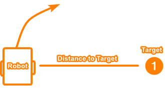

Odom Controller - November 15, 2019
Table of contents
In order to move to specific coordinates, I needed to design a versatile controller to allow me to tell the robot to drive to a point, using odometry information. This is quite a complex task, as it involves moving the robot in two dimensions while being efficient.
Basic Movement
Once you know the position of the robot and where you want to move, the challenge is to actually move there. Here is a very simple algorithm to drive to a point:
- Calculate angle to target
- Turn to face the target
- Calculate distance to target
- Move distance to reach target
While this algorithm works decently well, it is quite slow and is not able to dynamically adjust while on-course. I instead wanted to make an algorithm that would curve toward the target, and calculate course adjustments on the fly.
PID to Heading and Distance
The first algorithm I tried was PID. The distance and angle to the target would be sent to 2 PID controllers, and then the outputs would be combined. There were two problems with this method.
The first was that the algorithm had to be terminated when the robot reached the general vicinity of the target, or else the robot would start having a spasm. This is because the PID needs to have a negative input signal to be able to back up and settle.
However, when calculating distance to a point (using Pythagoras), you can’t know when you overshoot the target. Therefore, the robot could only move forward, so when it reaches and overshoots the target, the angle to the target flips 180 degrees and the distance PID goes full throttle.
The second problem with this method is that it is not the most efficient. If the robot was perpendicular to the target, the distance PID would output full power, even though moving forward is the wrong thing to do.

Instead, I wanted an algorithm that prioritized turning over moving, and that only moves when doing so would make the robot get nearer to the target.
Adaptive PID Seeking
I posed this question: “If the robot is locked to its current heading, so it can only move forward/backward, how can it move in a straight line to get closest to the point as possible?”.
If the robot was perpendicular to the target, the answer would be 0. But as the robot rotates to face the target, the answer becomes more and more. Here are some images illustrating the question (the answer is the length of the red line):

After some research and help, I was able to implement the math for this. When doing distance PID on the output of these calculations, the robot was able to move much more efficiently. I also had to implement some logic to be able to drive backward.
The reason this algorithm works great for settling is that if I turn off the angle PID when the robot is a certain distance away from the target, the adaptive distance PID brings the robot to a settled stop, giving a negative signal to back up.
To test this algorithm, I made a javascript simulation. You can see how the robot prefers turning over driving, and how it settles smoothly:
Settling
Every single autonomous motion has a settling period. However, I wanted the settling to be customizable for every single command. I wanted to be able to settle a few different ways:
- All PID controllers come to a rest
- All PID controllers get to some margin of error
- The robot gets to a certain requirement, such as a certain distance from a point or a certain angle
To do this, I created a parameter in each movement function that accepts a special kind of function called a Settler. Every loop, the movement function will ask the settler “am I settled yet?” and then the function will return true when it’s conditions are met.
Here is the lib7842 implementation of a Settler:
/**
* Function that returns true to end chassis movement. Used to implement different settling methods.
*/
using Settler = std::function<bool(const OdomController& odom)>;
Then, I created a few default settling functions and added the functionality to generate new settling functions on the fly. For example, here is a command with a settler that waits for all the PID controllers to settle.
driveToPoint({1_ft, 1_ft}, 1, driveSettle);
If I wanted to make the robot exit the movement when it was 4 inches away from the target, I could use a distance-based settler.
driveToPoint({1_ft, 1_ft}, 1, makeSettle(4_in));
Here are some examples of settler creators:
/**
* Make a Settler that exits when angle error is within given range
* @param angle The angle error threshold
*/
static Settler makeSettler(const QAngle& angle);
/**
* Make a Settler that exits when distance error is within given range
* @param distance The distance error threshold
*/
static Settler makeSettler(const QLength& distance);
Turning
All turning is essentially the same motion. The only difference with all possible turns is the goal calculation and movement method (point, pivot, or arc). I wanted to write only one turning algorithm, and have all the implementations plug-in.
Thus I used the same modular function pattern as the settling system and added parameters in the turning function to fulfill the angle calculation and movement method. Here are a few examples of a turn command:
turn(makeAngle({1_ft, 1_ft}), pointTurn, turnSettle);
turn(makeAngle(90_deg), leftPivot, makeSettle(5_deg));
Here is the lib7842 implementation of Turner and AngleCalculator:
/**
* Function that accepts a turning velocity and controls execution to the chassis. Used to implement
* a point or pivot turn.
*/
using Turner = std::function<void(ChassisModel& model, double vel)>;
/**
* Function that returns an angle for the chassis to seek. Examples can be an AngleCalculator that
* returns the angle to a point, or an angle to an absolute angle.
*/
using AngleCalculator = std::function<QAngle(const OdomController& odom)>;
Here is the basis turn function that all other turns use:
/**
* Turn the chassis using the given AngleCalculator
*
* @param angleCalculator The angle calculator
* @param turner The turner
* @param settler The settler
*/
virtual void turn(const AngleCalculator& angleCalculator, const Turner& turner = pointTurn,
const Settler& settler = defaultTurnSettler);
Here are a few AngleCalculator creators:
/**
* Make an AngleCalculator that seeks a given absolute angle
*
* @param angle The angle
*/
static AngleCalculator makeAngleCalculator(const QAngle& angle);
/**
* Make an AngleCaclulator that seeks a given point.
*
* @param point The point
*/
static AngleCalculator makeAngleCalculator(const Vector& point);
These AngleCalculators will provide the foundation on which to build X-Drive control on.
I also made a few helper functions to provide more expressive turning commands: turnToAngle(angle), turnAngle(angle), and turnToPoint(point), which all just call turn(angleCalc) internally.
OdomController Code
Here is the entire OdomController header:
/**
* Function that returns true to end chassis movement. Used to implement different settling methods.
*/
using Settler = std::function<bool(const OdomController& odom)>;
/**
* Function that accepts a turning velocity and controls execution to the chassis. Used to implement
* a point or pivot turn.
*/
using Turner = std::function<void(ChassisModel& model, double vel)>;
/**
* Function that returns an angle for the chassis to seek. Examples can be an AngleCalculator that
* returns the angle to a point, or an angle to an absolute angle.
*/
using AngleCalculator = std::function<QAngle(const OdomController& odom)>;
/**
* Odometry motion controller for skid-steer chassis.
*/
class OdomController {
public:
/**
* OdomController. Implements chassis movement algorithms
*
* @param imodel The chassis model
* @param iodometry The chassis odometry
* @param idistanceController The distance pid controller
* @param iturnController The turning pid controller
* @param iangleController The angle pid controller, used to keep distance driving straight
* @param isettleRadius The radius from the target point to give up angle correction
* @param itimeUtil The time utility
*/
OdomController(const std::shared_ptr<ChassisModel>& imodel,
const std::shared_ptr<Odometry>& iodometry,
std::unique_ptr<IterativePosPIDController> idistanceController,
std::unique_ptr<IterativePosPIDController> iturnController,
std::unique_ptr<IterativePosPIDController> iangleController,
const QLength& isettleRadius, const TimeUtil& itimeUtil);
virtual ~OdomController() = default;
/**
* Turn the chassis using the given AngleCalculator
*
* @param angleCalculator The angle calculator
* @param turner The turner
* @param settler The settler
*/
virtual void turn(const AngleCalculator& angleCalculator, const Turner& turner = pointTurn,
const Settler& settler = defaultTurnSettler);
/**
* Turn the chassis to face an absolute angle
*
* @param angle The angle
* @param turner The turner
* @param settler The settler
*/
virtual void turnToAngle(const QAngle& angle, const Turner& turner = pointTurn,
const Settler& settler = defaultTurnSettler);
/**
* Turn the chassis to face a relative angle
*
* @param angle The angle
* @param turner The turner
* @param settler The settler
*/
virtual void turnAngle(const QAngle& angle, const Turner& turner = pointTurn,
const Settler& settler = defaultTurnSettler);
/**
* Turn the chassis to face a point
*
* @param point The point
* @param turner The turner
* @param settler The settler
*/
virtual void turnToPoint(const Vector& point, const Turner& turner = pointTurn,
const Settler& settler = defaultTurnSettler);
/**
* Drive a distance while correcting angle using an AngleCalculator
*
* @param distance The distance
* @param angleCalculator The angle calculator
* @param turnScale The turn scale
* @param settler The settler
*/
virtual void moveDistanceAtAngle(const QLength& distance, const AngleCalculator& angleCalculator,
double turnScale,
const Settler& settler = defaultDriveAngleSettler);
/**
* Drive a distance while maintaining starting angle
*
* @param distance The distance
* @param settler The settler
*/
virtual void moveDistance(const QLength& distance,
const Settler& settler = defaultDriveAngleSettler);
/**
* Drive to a point using custom point seeking
*
* @param targetPoint The target point
* @param turnScale The turn scale used to control the priority of turning over driving. A
* higher value will make the robot turn to face the point sooner
* @param settler The settler
*/
virtual void driveToPoint(const Vector& targetPoint, double turnScale = 1,
const Settler& settler = defaultDriveAngleSettler);
/**
* Drive to a point using simple point seeking
*
* @param targetPoint The target point
* @param turnScale The turn scale used to control the priority of turning over driving. A
* higher value will make the robot turn to face the point sooner
* @param settler The settler
*/
virtual void driveToPoint2(const Vector& targetPoint, double turnScale = 1,
const Settler& settler = defaultDriveAngleSettler);
/**
* A Settler that is used for turning which uses the turning pid's isSettled() method
*/
static bool defaultTurnSettler(const OdomController& odom);
/**
* A Settler that is used for driving which uses the distance pid's isSettled() method
*/
static bool defaultDriveSettler(const OdomController& odom);
/**
* A Settler that is used for driving which uses the distance and angle pid's isSettled() method
*/
static bool defaultDriveAngleSettler(const OdomController& odom);
/**
* A Turner that executes a point turn which turns in place. Used as default for turn functions
*/
static void pointTurn(ChassisModel& model, double vel);
/**
* A Turner that executes a left pivot, meaning it only moves the left motors.
*/
static void leftPivot(ChassisModel& model, double vel);
/**
* A Turner that executes a right pivot, meaning it only moves the right motors.
*/
static void rightPivot(ChassisModel& model, double vel);
/**
* Make a Settler that exits when angle error is within given range
* @param angle The angle error threshold
*/
static Settler makeSettler(const QAngle& angle);
/**
* Make a Settler that exits when distance error is within given range
* @param distance The distance error threshold
*/
static Settler makeSettler(const QLength& distance);
/**
* Make a Settler that exits when both angle and distance error is within given range.
* @param angle The angle error threshold
* @param distance The distance error threshold
*/
static Settler makeSettler(const QLength& distance, const QAngle& angle);
/**
* Make an AngleCalculator that seeks a given absolute angle
*
* @param angle The angle
*/
static AngleCalculator makeAngleCalculator(const QAngle& angle);
/**
* Make an AngleCaclulator that seeks a given point.
*
* @param point The point
*/
static AngleCalculator makeAngleCalculator(const Vector& point);
/**
* Make an AngleCaclulator that returns a constant error. The default settler needs to be changed
* for a command using this calculator to settle.
*
* @param error The error
* @return The angle calculator.
*/
static AngleCalculator makeAngleCalculator(double error);
/**
* Make an AngleCalculator that does nothing
*/
static AngleCalculator makeAngleCalculator();
/**
* Get the odometry state.
*/
State getState() const;
/**
* Calculate distance from the chassis to the point
*/
QLength distanceToPoint(const Vector& point) const;
/**
* Calculate angle from the chassis to the point
*/
QAngle angleToPoint(const Vector& point) const;
protected:
/**
* Reset the pid controllers, used before every motion
*/
virtual void resetPid();
std::shared_ptr<ChassisModel> model {nullptr};
std::shared_ptr<Odometry> odometry {nullptr};
std::unique_ptr<IterativePosPIDController> distanceController {nullptr};
std::unique_ptr<IterativePosPIDController> angleController {nullptr};
std::unique_ptr<IterativePosPIDController> turnController {nullptr};
const QLength settleRadius;
TimeUtil timeUtil;
QAngle angleErr = 0_deg;
QLength distanceErr = 0_in;
};
Here is the motion algorithm to drive to a point using the adaptive seeking method:
void OdomController::driveToPoint(const Vector& targetPoint, double turnScale,
const Settler& settler) {
resetPid();
auto rate = timeUtil.getRate();
do {
State state = getState();
Vector closestPoint = closest(state, targetPoint);
QAngle angleToClose = state.angleTo(closestPoint);
QAngle angleToTarget = state.angleTo(targetPoint);
QLength distanceToClose = state.distTo(closestPoint);
QLength distanceToTarget = state.distTo(targetPoint);
// go backwards
if (angleToClose.abs() >= 90_deg) distanceToClose = -distanceToClose;
if (distanceToTarget.abs() < settleRadius) {
angleErr = 0_deg;
// used for settling
distanceErr = distanceToClose;
} else {
angleErr = angleToTarget;
// used for settling
distanceErr = distanceToTarget;
}
// rotate angle to be +- 90
angleErr = rotateAngle90(angleErr);
double angleVel = angleController->step(-angleErr.convert(degree));
double distanceVel = distanceController->step(-distanceToClose.convert(millimeter));
driveVector(model, distanceVel, angleVel * turnScale);
rate->delayUntil(10_ms);
} while (!settler(*this));
driveVector(model, 0, 0);
}